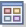

Enterprise Status Workspace
At the highest level of the Navigator Physical view is the Enterprise item. The default workspace for the Enterprise is called Enterprise Status.
The Enterprise Status workspace contains four views:
- Situation Event Console
- The situation event console inserts a row when the status of a situation
changes: Open (including expired and reopened events), Problem, and
Acknowledged. The Owner column shows who acknowledged the event, and you can
acknowledge an event from the pop-up menu. Link indicators in this view and in
the My Acknowledged Events view open the “Event Details Workspace” or you
can right-click a
 link indicator and select another of the linked
workspaces.
link indicator and select another of the linked
workspaces. - My Acknowledged Events
- The My Acknowledged Events table view displays the events assigned to the
current user. This view shows both open and closed events. Closed events are
displayed to enable you to access the notes and actions taken against them.
For each event record listed, you can click the
link indicator at the beginning of the event row to open the “Event Details Workspace”
with similar events based on the situation name; or you can right-click the
link indicator to see the other Event Details workspaces. The Event Details
workspace shows any notes and attachments for the acknowledged event, along
with other related events and a link to the IBM Integrated Service
Management Library (http://www.ibm.com/software/brandcatalog/ismlibrary) where you can find analytical tools for
situations.If the event is from an incident management agent (such as IBM Information Management), you will also see a Reference ID column and, when you open the pop-up menu to select a linked workspace, a link to the Incident Details workspace.
- Message Log
- The message log view displays a row for every situation in the monitored network whose status changes to any of the following: Open, Closed, Stopped, Problem, Acknowledged, Expired, or Reopened.
- Open Situations Counts - Last 24 Hours
- The Open Situations Counts - Last 24 Hours is a chart view which displays a bar for every situation in the monitored network that has become true in the past 24 hours. The bar size indicates the number of times a situation event has been opened during this time.
- More Predefined Workspaces
- More predefined workspaces for the Enterprise Navigator item are accessible through the Workspace Gallery, or by selecting the Workspaces menu option. In addition, your monitoring product might have workspaces at the Enterprise level. Consult your product help for more information.